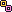

Poderes: Megaevolución, Dinamax, Z y Teracristal
Si vences a Eternatus en el minuto 20, eliges un poder para el resto de la partida. Se usa con F (con mando, X; en el móvil, con su botón redondo, que sale cuando está listo), dura unos segundos y se recarga solo con el tiempo.
Cómo se consigue
- Al ganar a Eternatus salen 3 o 4 cartas según tu Pokémon: Megaevolución (o Fusión / Cambio de forma) si tiene, Gigamax si tiene esa forma (si no, Dinamax), la Pulsera Z y el Teracristal.
- Es uno por partida: no se cambia ni se guarda para la siguiente. Si caes ante Eternatus, no hay poder.
- En grupo, si ganáis, cada uno elige el suyo.
- La barra del poder va debajo de tu vida: se llena sola durante la recarga y brilla cuando está lista.
| Poder | Dura | Recarga | En resumen |
|---|---|---|---|
| 40 s | 90 s | Su forma Mega: tipos, stats y habilidad nuevos | |
| 12 s | 80 s | Gigante, doble de vida, +40 % de daño y lo destroza todo | |
| 15 s + el movimiento Z | 60 s | Zetas que ruedan y, al final, un golpe a toda la pantalla | |
| 30 s | 75 s | Pasa a ser del tipo que elijas y sus ataques de ese tipo pegan mucho más |
 Megaevolución
Megaevolución
- Tipos, stats y habilidad de su Mega durante 40 s (la vida no cambia).
- Los stats nuevos van en proporción a lo que llevas: tu nivel en la partida, tu naturaleza y tus Mejoras se mantienen.
- Los que tienen dos (Charizard X o Y, Mewtwo X o Y…) eligen una al coger el poder.
- Kyogre y Groudon vuelven a su forma primigenia (con lluvia o sol); Mega Charizard Y pone sol.
- 85 Pokémon tienen Mega.

Fusiones y formas de poder- Van en la misma carta, con las mismas reglas que la Mega.
- Necrozma (Melena Crepuscular, Alas del Alba o Ultra-Necrozma), Kyurem (Blanco o Negro), Calyrex (Jinete Glacial o Espectral), Zacian, Zamazenta, Zygarde Completo y Greninja Ash.
- Solgaleo, Lunala, Reshiram, Zekrom, Glastrier y Spectrier también se fusionan desde su mitad.
 Dinamax y Gigamax
Dinamax y Gigamax
- Se hace gigante, dobla su vida y pega un 40 % más; cada golpe salpica a los de alrededor.
- Rompe lo que pisa (árboles, rocas, muros, cofres) y aplasta a los Pokémon normales.
- Los 32 con forma Gigamax sueltan cada 3 s una onda G-Max con efecto: curar, quemar, aturdir, frenar, envenenar, encadenar, escudo…
- En la Sentencia de Arceus no cura.
 Pulsera Z
Pulsera Z
- Eliges un tipo (o el Z exclusivo de tu Pokémon: Pikachu, Eevee, Snorlax, Mew, Mimikyu…).
- Durante 15 s, cada 0,8 s rueda una gran Z que atraviesa a todos.
- Al acabar, el movimiento Z: golpe a todos los enemigos de la pantalla.
 Teracristal
Teracristal
- Eliges uno de los 18 tipos (o Astral): tu Pokémon pasa a ser sólo de ese tipo.
- Sus ataques de ese tipo pegan ×1,5, o ×1,8 si ya era uno de sus tipos.
- Astral: conserva sus tipos y todos sus ataques pegan ×1,3.
Formas del Pokémon
Regionales
Vulpix de Alola, Meowth de Galar, Growlithe de Hisui… Son Pokémon aparte: salen en el gacha y tienen sus tipos y stats. Hay 57.
Que cambian tipos y stats
Deoxys, Rotom, Arceus, Shaymin, Hoopa, Oricorio… Después de la 3.ª grieta (minuto 12) te deja elegir su forma una vez, para el resto de la partida.
De combate
Aegislash, Wishiwashi, Darmanitan, Mimikyu, Eiscue, Castform, Morpeko, Palafin… Cambian solas según lo que pasa en la partida.
Estéticas
Las letras de Unown, los motivos de Vivillon, las Alcremie, las hembras… Gratis en el Vestidor: sólo cambian el dibujo.
Consejo: los números de los poderes son de salida y pueden ajustarse cuando haya datos de las partidas.